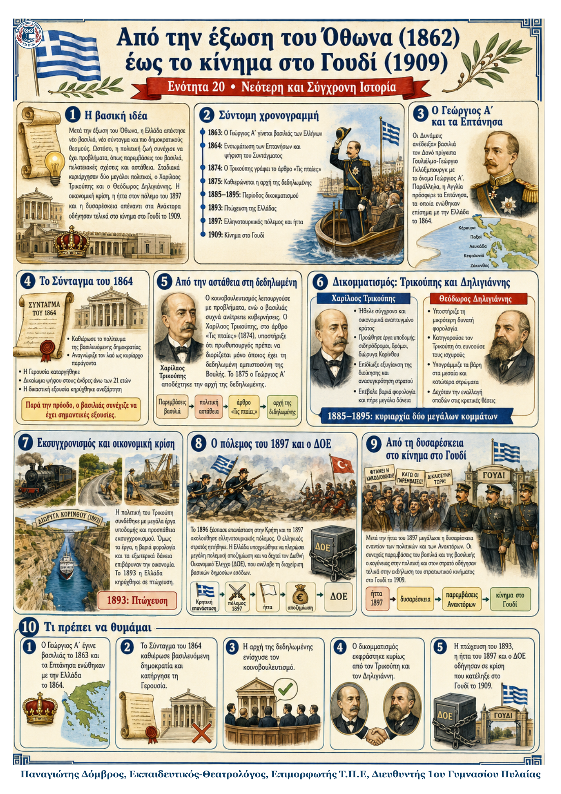

Δεν βρέθηκε η λέξη ή η φράση μέσα στην ενότητα.
1Η βασική ιδέα
Μετά την έξωση του Όθωνα, η Ελλάδα απέκτησε νέο βασιλιά, νέο Σύνταγμα και πιο δημοκρατικούς θεσμούς. Ωστόσο, η πολιτική ζωή παρέμεινε ασταθής, επειδή ο βασιλιάς επενέβαινε στις κυβερνήσεις και τα κόμματα στηρίζονταν συχνά σε προσωπικές σχέσεις και διορισμούς. Η αρχή της δεδηλωμένης και ο δικομματισμός βελτίωσαν τη λειτουργία του κοινοβουλευτισμού. Παράλληλα, οι μεταρρυθμίσεις, τα μεγάλα δάνεια, η πτώχευση και η ήττα του 1897 οδήγησαν σε βαθιά κρίση, η οποία προετοίμασε το κίνημα στο Γουδί το 1909.
2Από τον Όθωνα στον Γεώργιο Α΄
Νέος βασιλιάς. Μετά την έξωση του Όθωνα, οι Μεγάλες Δυνάμεις επέλεξαν τον 18χρονο Δανό πρίγκιπα Γουλιέλμο-Γεώργιο Γκλύξμπουργκ. Ανέλαβε τον θρόνο με το όνομα Γεώργιος Α΄ και τον τίτλο «βασιλιάς των Ελλήνων».
Ενσωμάτωση των Επτανήσων. Οι ριζοσπάστες Επτανήσιοι αγωνίζονταν για ένωση με την Ελλάδα. Η Αγγλία παραχώρησε τα Επτάνησα στον νέο βασιλιά το 1863 και η επίσημη ενσωμάτωση έγινε το 1864.
3Το Σύνταγμα του 1864
Δημοκρατική αρχή: ο λαός αναγνωριζόταν ως κυρίαρχος παράγοντας του πολιτεύματος.
Πολίτευμα: βασιλευόμενη δημοκρατία. Ο βασιλιάς ήταν ανώτατος άρχοντας, αλλά δεν αποτελούσε την πηγή της εξουσίας.
Νομοθετική εξουσία: ασκούνταν από τον βασιλιά και τη Βουλή. Η Γερουσία καταργήθηκε ως αντιδημοκρατικός θεσμός.
Δικαίωμα ψήφου: αναγνωρίστηκε στους άνδρες άνω των 21 ετών.
Εκτελεστική και δικαστική εξουσία: ο βασιλιάς συνεργαζόταν με υπουργούς που διόριζε, ενώ η δικαιοσύνη κηρύχθηκε ανεξάρτητη.
4Η πολιτική ζωή πριν από τη δεδηλωμένη
Αλέξανδρος Κουμουνδούρος. Κυριάρχησε την περίοδο 1864–1881. Ως πρωθυπουργός μοίρασε εθνικές γαίες το 1871 και επιδίωξε τη διεύρυνση των συνόρων. Συγκρούστηκε, όμως, με τον Γεώργιο σε θέματα εξωτερικής πολιτικής.
Προβλήματα του κοινοβουλευτισμού. Οι δημόσιοι υπάλληλοι δεν ήταν μόνιμοι. Πολίτες ζητούσαν διορισμούς από βουλευτές και οι βουλευτές στήριζαν πολιτικούς αρχηγούς που εξυπηρετούσαν τους οπαδούς τους. Ο βασιλιάς ανέτρεπε κυβερνήσεις όταν διαφωνούσε μαζί τους.
5Η αρχή της δεδηλωμένης και ο δικομματισμός
Το άρθρο «Τις πταίει;». Το 1874 ο Χαρίλαος Τρικούπης κατηγόρησε τον βασιλιά ότι διόριζε κυβερνήσεις χωρίς την υποστήριξη της κοινοβουλευτικής πλειοψηφίας. Υποστήριξε ότι πρωθυπουργός έπρεπε να γίνεται μόνο όποιος είχε τη «δεδηλωμένη» εμπιστοσύνη της Βουλής.
Η λύση του 1875. Ο Γεώργιος διόρισε τον Τρικούπη προσωρινό πρωθυπουργό και δέχτηκε επίσημα την αρχή της δεδηλωμένης. Από τότε ο βασιλιάς όφειλε να επιλέγει κυβέρνηση που είχε την υποστήριξη της πλειοψηφίας των βουλευτών.
6Γιατί ήταν σημαντική η δεδηλωμένη;
Περιόρισε την αυθαίρετη παρέμβαση του βασιλιά, συνέδεσε την κυβέρνηση με την πλειοψηφία της Βουλής και έκανε πιο σταθερή τη λειτουργία του κοινοβουλευτισμού. Δεν εξαφάνισε όλα τα προβλήματα, αλλά αποτέλεσε βασικό βήμα προς πιο ομαλή κοινοβουλευτική ζωή.
7Ο δικομματισμός
Πώς δημιουργήθηκε. Μετά τη δεδηλωμένη, τα μικρά κόμματα έχασαν την αυτονομία τους και ενσωματώθηκαν σε μεγαλύτερα. Τη δεκαετία 1885–1895 εναλλάσσονταν στην εξουσία κυρίως δύο παρατάξεις, του Χαρίλαου Τρικούπη και του Θεόδωρου Δηλιγιάννη.
| Θέμα | Χαρίλαος Τρικούπης | Θεόδωρος Δηλιγιάννης |
|---|---|---|
| Κεντρικός στόχος | Σύγχρονο, οργανωμένο και οικονομικά αναπτυγμένο κράτος. | Μικρότερη φορολογία και προστασία μεσαίων και κατώτερων στρωμάτων. |
| Δημόσια διοίκηση | Αντικειμενικά προσόντα για την πρόσληψη υπαλλήλων. | Δεκτή η εναλλαγή κυβερνητικών οπαδών στις κρατικές θέσεις. |
| Οικονομική πολιτική | Μεγάλα έργα, βαριά φορολογία, εξωτερικά δάνεια και προσέλκυση κεφαλαίων. | Κριτική στη φορολογία και στην εύνοια προς τους οικονομικά ισχυρούς. |
| Εξωτερική πολιτική | Ειρηνική συμβίωση με την Οθωμανική αυτοκρατορία. | Πιο ευαίσθητος στις πιέσεις της κοινής γνώμης και της Μεγάλης Ιδέας. |
8Το πρόγραμμα του Χαρίλαου Τρικούπη
Μεγάλα έργα υποδομής: σιδηρόδρομοι, οδοποιία και διάνοιξη της διώρυγας της Κορίνθου.
Ανασυγκρότηση των ενόπλων δυνάμεων και προσπάθεια καλύτερης οργάνωσης του κράτους.
Εξυγίανση της δημόσιας διοίκησης με αντικειμενικά κριτήρια πρόσληψης.
Χρηματοδότηση μέσω βαριάς φορολογίας και μεγάλων δανείων από τράπεζες του εξωτερικού.
Παροχή προνομιακών όρων σε Έλληνες κεφαλαιούχους του εξωτερικού για επενδύσεις.
Κόστος των μεταρρυθμίσεων. Τα έργα απαιτούσαν πολλά χρήματα. Η βαριά φορολογία και τα εξωτερικά δάνεια αύξησαν τις υποχρεώσεις του κράτους και οδήγησαν στην πτώχευση του 1893.
9Από την πτώχευση στην εθνική κρίση
Η πολιτική ανατροπή του 1895. Μετά την πτώχευση, ο Τρικούπης έχασε την πολιτική του δύναμη και δεν εκλέχθηκε ούτε βουλευτής. Ο Δηλιγιάννης έγινε πρωθυπουργός και βρέθηκε αντιμέτωπος με οικονομικά, κοινωνικά και εθνικά προβλήματα.
Η Κρητική επανάσταση. Το 1896 ξέσπασε νέα επανάσταση στην Κρήτη. Η κοινή γνώμη, επηρεασμένη από τη Μεγάλη Ιδέα, πίεσε την κυβέρνηση να επέμβει. Τον Φεβρουάριο του 1897 ο Δηλιγιάννης έστειλε ελληνικό στρατό στο νησί.
10Ο ελληνοτουρκικός πόλεμος του 1897
| Κρητική κρίση | → | Αποστολή στρατού | → | Πόλεμος στη Θεσσαλία | → | Ελληνική ήττα |
|---|
Η εξέλιξη του πολέμου. Ο ελληνικός στρατός, με αρχιστράτηγο τον διάδοχο Κωνσταντίνο, ηττήθηκε. Οι οθωμανικές δυνάμεις έφτασαν έως τη Λαμία. Αποχώρησαν από τη Θεσσαλία μόνο όταν οι Μεγάλες Δυνάμεις εξασφάλισαν ότι η Ελλάδα θα πλήρωνε μεγάλη πολεμική αποζημίωση.
Διεθνής Οικονομικός Έλεγχος. Για να πληρώσει την αποζημίωση, η Ελλάδα πήρε νέο δάνειο. Οι Δυνάμεις επέβαλαν τον Διεθνή Οικονομικό Έλεγχο, μια επιτροπή που διαχειριζόταν σημαντικά δημόσια έσοδα ώστε να εξασφαλίζεται η αποπληρωμή των χρεών.
11Πώς φτάσαμε στο κίνημα στο Γουδί
Η ήττα του 1897 προκάλεσε αίσθημα ταπείνωσης και μεγάλη λαϊκή δυσαρέσκεια.
Οι πολίτες έχασαν την εμπιστοσύνη τους στους πολιτικούς και στα Ανάκτορα.
Ο βασιλιάς Γεώργιος και μέλη της βασιλικής οικογένειας συνέχιζαν να παρεμβαίνουν στην πολιτική και στις ένοπλες δυνάμεις.
Οι αξιωματικοί ένιωθαν ότι ο στρατός χρειαζόταν βαθιές αλλαγές και καλύτερη οργάνωση.
Η συσσωρευμένη κρίση οδήγησε το 1909 στο στρατιωτικό κίνημα στο Γουδί.
12Ιστορική πηγή: «Τις πταίει;»
Τι υποστήριζε ο Τρικούπης
Στο άρθρο του ο Τρικούπης δεν απέδιδε την ευθύνη στον λαό. Θεωρούσε ότι η πολιτική κακοδαιμονία προερχόταν από τη στρέβλωση του Συντάγματος και από την πρακτική του βασιλιά να διορίζει κυβερνήσεις χωρίς κοινοβουλευτική πλειοψηφία. Ως λύση πρότεινε τη δεδηλωμένη: η κυβέρνηση να εξαρτάται από την εμπιστοσύνη της Βουλής.
13Τι πρέπει να θυμάμαι
Το 1864 καθιερώθηκε βασιλευόμενη δημοκρατία και καταργήθηκε η Γερουσία.
Η αρχή της δεδηλωμένης, από το 1875, συνέδεσε την κυβέρνηση με την πλειοψηφία της Βουλής.
Ο δικομματισμός οργανώθηκε γύρω από τον Τρικούπη και τον Δηλιγιάννη.
Ο Τρικούπης προώθησε μεγάλα έργα, αλλά η βαριά φορολογία και τα δάνεια οδήγησαν στην πτώχευση του 1893.
Ο πόλεμος του 1897 κατέληξε σε ήττα, αποζημίωση και Διεθνή Οικονομικό Έλεγχο.
Η πολιτική και στρατιωτική δυσαρέσκεια κορυφώθηκε με το κίνημα στο Γουδί το 1909.
